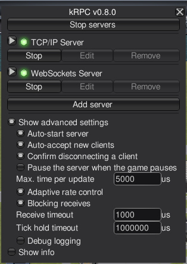

Server Performance#
The server executes calls on the game’s main thread, inside its physics update. Each call takes time from the game’s frame, so the server trades calls a second against the frame rate. Its settings choose where it sits on that trade.
How Calls Are Scheduled#
The game runs its physics in fixed steps, 50 a second, and renders frames in between. In each physics step the server:
Executes the calls that have arrived, taking one from each client in turn.
Waits for a client’s next call, when it expects one soon.
Updates the streams.
The server keeps to a budget of time per frame. Each physics step may use what is left of the frame’s budget, and at least 1 ms or the max time per frame if lower, so calls progress on every step. A call left when the budget runs out is executed in the next step. Streams always update, and their time counts toward the budget.
A program that makes a call, works with the result, then makes the next call gets one call per physics step, unless the server waits for it. The server measures each client’s time between calls, and waits while a wait is worth its cost in frame time. A call that arrives after the wait is executed in the next step.
Choosing a Preset#

Server window showing the advanced settings.#
The advanced settings in the server window include a preset. Choosing a preset sets the settings below, and editing a setting shows “Custom”.
Preset |
For |
Settings |
|---|---|---|
Game first |
Playing while a script watches: dashboards, telemetry, recording |
1 ms per frame, waits of up to 1 ms |
Balanced, the default |
Most scripts |
Adaptive rate control at 60 fps, up to 10 ms per frame, waits of up to 5 ms |
Calls first |
Calls over the frame rate: data collection, training, batch jobs |
20 ms per frame, waits of up to 20 ms |
Calls first gives a busy program up to 20 ms of every frame, whatever the game’s frame rate. A light game limited to 60 fps then runs at about 45 fps, and a heavy one at about 25 fps. An idle program costs nothing. For more calls, raise the max time per frame toward 1 s. The game slows game time once a frame takes longer than 0.04 s.
A program that makes one call at a time gets roughly:
\(B\) is the server’s time per frame, \(G\) the game’s own time per frame, \(t_c\) the program’s time between calls and \(t_s\) the server’s time per call.
Settings#
Adaptive rate control: On by default. The server adjusts its budget to hold the frame rate at the target. Frames slower than the target cut the budget to the server’s average time per frame, less the frames’ excess. While frames meet the target and the budget is what stops the server, the budget grows, up to the max time per frame.
Target frame rate: 60 fps by default, from 1 to 1000 fps. The lowest frame rate the server’s work pushes the game to, with adaptive rate control. A game slower than the target on its own gets 1 ms of calls per physics step.
Max. time per frame: 10000 us by default, from 100 us to 1 s. The budget without adaptive rate control, and its ceiling with it.
Max. call wait: 5000 us by default. The most frame time the server spends waiting to gain a call in the current physics step, and the longest it waits for a program that calls without pause. A program slower than this between calls gets one call per step. A value of 0 turns the waits off.
Tick hold timeout: How long a client may hold a tick, as below.
Reading the Statistics#
KRPC.GetStatus returns the server’s settings and statistics. The statistics are averages
over the last few frames:
stats = conn.krpc.get_status().statistics
print("Frame rate: %.0f fps" % stats.frame_rate)
print("Calls: %.0f a second" % stats.rpc_rate)
print(
"Server per frame: %.1f of %.1f ms"
% (stats.time_per_frame * 1e3, stats.budget_per_frame * 1e3)
)
print("Waiting per frame: %.1f ms" % (stats.wait_time_per_frame * 1e3))
print("Median turnaround: %.1f ms" % (stats.median_turnaround * 1e3))
“Show info” in the server window shows the same values. Its “Limited by” row names the cause of a low call rate:
Budget. The budget stops the server in most frames. Raise the max time per frame, or choose Calls first.
Max. call wait. The program’s median turnaround is above the max call wait, so the server does not wait for its calls. Raise the max call wait, or make fewer calls.
Slow game. The frame rate is below the target with adaptive rate control, and the budget is at 1 ms.
Client. The server waits for each call, so the program’s own speed sets the rate.
Getting More Calls per Tick#
A call the program does not make costs nothing:
Streams send a value on every physics step, with no call.
Server side functions compute on the server, in one call for many.
Holding a tick executes every call of a loop iteration in one step.
Holding a Tick#
A client can hold the game on its current physics tick, so every call it makes is executed before the game advances. A control loop can then read the game state, compute with it and write the result back within one tick. See the control loops guide for how a program uses it.
What a hold means for the server:
Tick hold timeout sets how long a client may hold a tick, one second by default. It bounds how long the game can be made to appear frozen, and the server owns it rather than the client. A hold also ends when the client disconnects.
The budget does not apply while a tick is held. Adaptive rate control skips a frame that held one, which would otherwise count the client’s own work as time the server spent and cut the budget for every client.
The game renders no frame, takes no input and runs no physics while a tick is held. Physics runs on a fixed time step, so a game whose ticks are held runs slower than real time and simulates every tick in turn.
Streams do not update inside a hold, as stream updates are sent once the update has finished executing calls. New connections are not accepted either, as the servers are polled between updates.